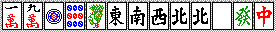
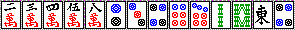
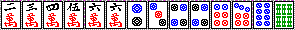

とつげき東北麻雀講座 ﾘｨﾁ（ﾉ⌒∇）ﾉ☆⌒（＾-＾ ）▼.●.）～

講師(笑)：とつげき東北
【特別編１（メンツづくり・手役作り強化編）】
メンツづくりのうまさ（単純に、最も早く上がりへ向かう技術）というのは、麻雀の強さの要素としてとても大きいと感じます。
実際、Ｒ１８５０以上で安定するような人の打牌は、みなほとんど同じになっています。
それに対して、Ｒ１６００台くらいの打ち手には、１局に何度も「なんでやねん！」とツッコミを入れたくなります(笑)し、Ｒ１３００くらいになると、放っておけばノーテンバップだけではこるのではないかと思われる打牌をします。
狙う手役も同様です。
上級者は、ハイパイを見た時点で点数状況やドラの種類の関係から、ある種の方向性をもって手を進めていきます。例えば、ドラがオタカゼならヤクハイを残しながら打つとか、トップならリーチをかけないで上がれる手を作るとか、そういったことです。
一方、初級者はオーラス２位でも平気でヤクマンを狙ったり、東３局で４位なのにリーのみにしかならない手を作ったりしています。これでは勝てるはずがありません・・・。
まぁそういったことから、ここでは他家の動きなど完全無視して、ただただ「自分の手を作る」練習をしましょう。
手作りの基礎
ある程度上手なメンツ作りのポイントは、以下の通りです。
・頭を端に寄せる
・基本は１色に２メンツまで
・リーのみになるようなトイツは手早く処理
これをふまえながら、さっそくメンツ作りにとりかかります。
東１・親の手です。ドラは白。

どこに頭とメンツを作るか、おおまかに考えておきましょう。
マンズの下に１～２メンツ、ピンズに２メンツというのが普通ですね。この段階では、頭候補は２マン５マン４ピンあたりとしておきます。マンズの下のリャンメン２つ（２３マン、４５マン）は、リャンメンとしては少し不利な形ですので、他の部分の浮き牌もメンツ候補と考えておく必要があるでしょう。こういったことをしっかり考えた上で、打牌を選ばなければいけません。
ここで東を切るのは誤打と言って良いでしょう。
東１の親の手です。ダブ東のみで２９００なのですから、よほど手がまとまるまでは手放すわけにはいきません。
８マン、２ソウ、８ソウあたりを切るのが普通です。河を見て、少しでもメンツになりやすいものを残しましょう。例えば９ソウが２枚出ていたら、８ソウはメンツになりにくいわけですね。

なかなかいい形の１シャンテンだと思います。
頭とメンツが自由に決まるような形で、理想的です。
１４７マン、３６マン、１４ピン、３５ピンどれを引いてもピンフ形のテンパイです。
３４５５ とか、３４５６とかの形は、頭候補にもメンツ候補にもなります。
ここでは６ソウを切りますが、次に例えば５マンをツモったらどうしますか？
４ピンを切れば５６マン待ちのタンヤオテンパイですね。しかし５マンなら即座にツモ切りできるようになりましょう。
ダマタンヤオの、それも真ん中のシャンポンでは、せっかくの手が台無しです。イーペーコーへの手替わりがあっても、この形では安めの方がでやすく、またそれまでに上がりになることも多いはずです。ピンフなら自信を持ってリーチできる手ですね。